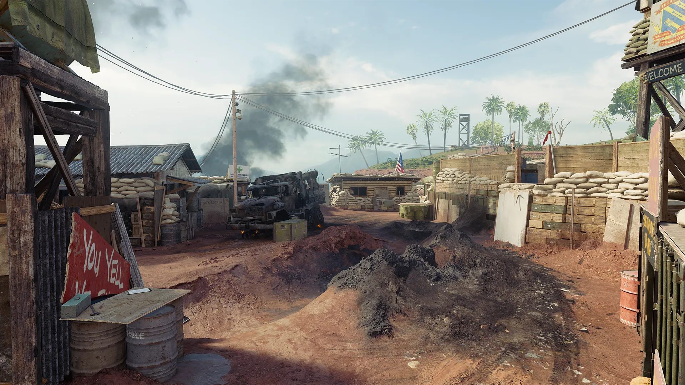
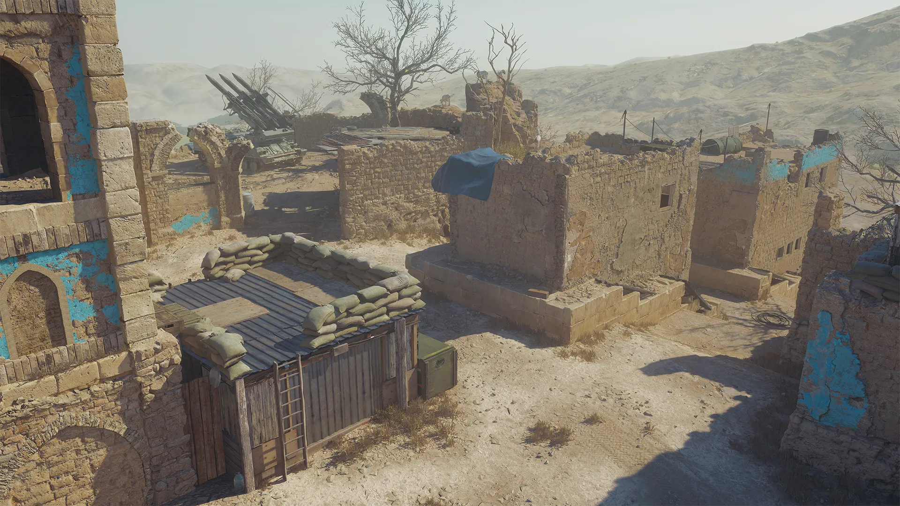
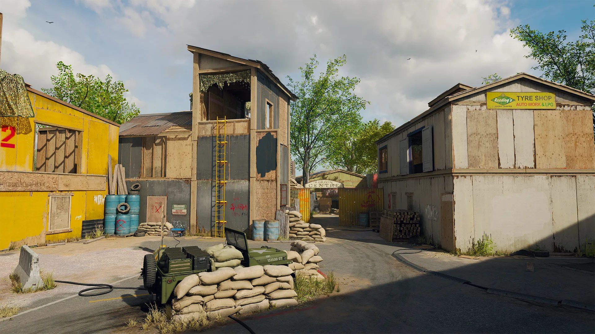

Barragem
Revisite o Vietnã de 1968 em Summit Watch, seu novo lar longe de casa e um dos locais marcados por Hudson para os agentes infiltrados da Pantheon durante a guerra. Um enorme triturador de árvores arrasou a paisagem, abrindo espaço para esta base de artilharia que verá combates intensos. Alguns edifícios sofreram danos na luta, e os estragos criam novos caminhos pelo mapa.
- Olhe para os dois lados ao cruzar: As estradas interconectadas dentro da base oferecem caminhos rápidos entre pontos de interesse, mas você fica altamente vulnerável ao atravessá-las. Verifique seu minimapa e arredores para tomar melhores decisões sobre quando cruzar.
- Um após o outro: A Vantagem Instinto de Caçador faz maravilhas aqui, indicando a direção do próximo inimigo mais próximo sempre que você elimina um alvo. Barrage é um mapa compacto, e essa informação extra pode evitar que você seja flanqueado e perca sua sequência.
- Atirador avistado: Embora todas as classes de armas tenham bom desempenho em Barrage, os Fuzis de Atirador merecem destaque. As numerosas linhas de visão de médio alcance do mapa, combinadas com visões mais longas pelas estradas, tornam-nos uma boa escolha, oferecendo potência e precisão para eliminações precisas.
Nômade
Os agentes infiltrados da Pantheon estavam no Afeganistão quando Woods lutou aqui em 1986, e agora é sua missão seguir as pistas de Hudson para descobrir o motivo. As ruínas de Nômade revelam uma fortaleza tomada para a batalha iminente. Um transportador de mísseis estacionado enfrenta o vale onde a caravana jaz em ruínas na estreita estrada que leva ao local onde você e seus companheiros de equipe enfrentarão o time adversário.
Navegue pelos arcos e muros desmoronados enquanto enfrenta inimigos ao ar livre, com o único edifício acessível sendo a Torre que se ergue no centro do mapa. Uma tirolesa oferece acesso rápido para subir e descer dessa posição cobiçada, prometendo confrontos frequentes pelo controle de suas vistas.
- Fogo cruzado no centro da cidade: Do centro do mapa, da Torre até a Casa, há um conjunto de edifícios que fornecem cobertura sólida de uma metade do mapa à outra. Isso também cria vários pontos de estrangulamento cruciais em Nômade. Estabelecer um fogo cruzado em qualquer um desses pontos pode ser decisivo para garantir a vitória.
- Ataque de atirador: A faixa norte de Nômade parece projetada especialmente para o confronto 1v1 de snipers que muitos jogadores buscam. De uma janela de muro quebrado a outra, o timing nesse local é fundamental. Cuidado com os corredores de fogo cruzado na estrada.
- Rotas de flanqueamento: Nômade pode ser um mapa de Strike, mas a cidade é densa e cheia de pontos de cobertura que permitem quebrar a linha de visão dos Operadores inimigos com frequência. Use o layout do mapa para passar pelas defesas inimigas movendo-se de forma rápida e silenciosa. Trabalhe com sua equipe para desmantelar as configurações de fogo cruzado do oponente.
Campo de Tiro
Desloque-se para o Campo de Tiro, que retorna em Black Ops 6 com uma remasterização fiel do mapa favorito dos fãs. Lute pelo controle da Torre central, serpenteie entre alvos de tiro que se movem para frente e para trás em seus trilhos, e aperfeiçoe sua pontaria com fogo cruzado na Estrada principal. Seja você novo no mapa ou um veterano retornando ao local, use este guia para acertar o alvo e garantir a vitória.
- Prova de fogo: O centro do mapa é ladeado por múltiplas posições de poder ao longo de uma estrada aberta, levando a um fogo cruzado constante na área. Se você conseguir uma posição forte, isso pode ser uma grande vantagem, fornecendo alvo após alvo para alimentar suas Scorestreaks.
- Um caminho menos percorrido: Se o centro não estiver funcionando, crie uma rota de flanqueamento pela Estrada de Terra, Contêineres ou Campo de Tiro, interceptando inimigos no caminho. Você pode até tentar segurar a retaguarda do Escritório, acertando alvos próximos ao centro sem se expor à Torre e outras posições de poder.
- Inimigo avistado: Equipe a Vantagem Engenheiro ou busque a Especialidade de Combate Estrategista para ver equipamentos inimigos através das paredes, ajudando a detectar ameaças em rotas perigosas como o centro, Estrada de Terra e Contêineres.